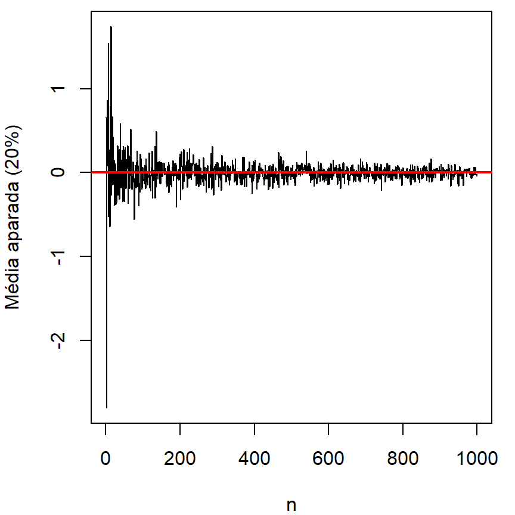
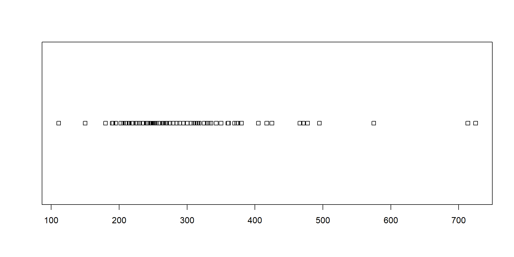
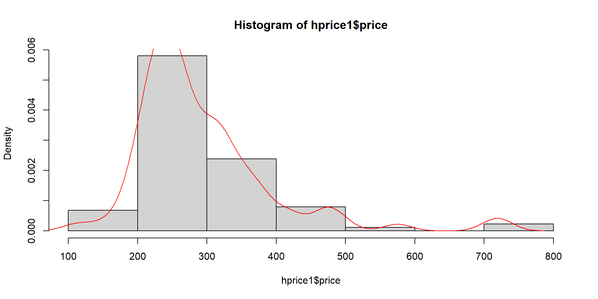
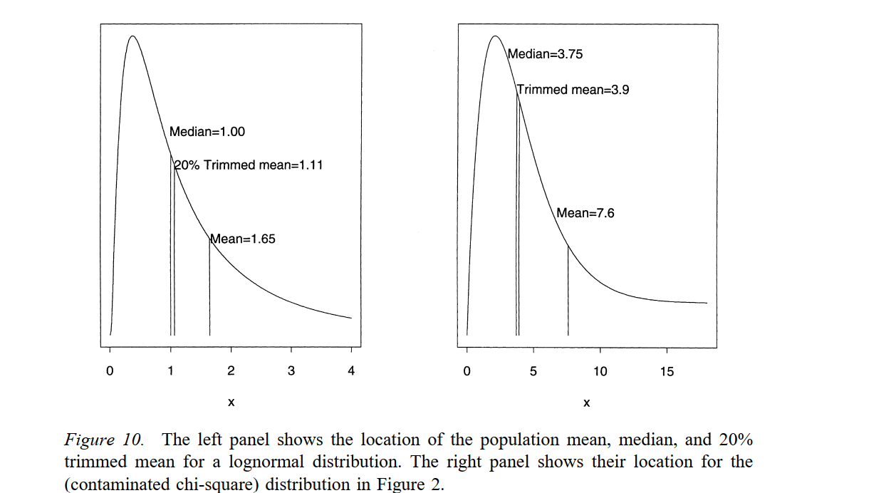

[1] 0.29071Avaliação em Massa
Probabilidade e Estatística Descritiva
Luiz Droubi
Academia da Engenharia de Avaliações
28 de julho de 2025
Introdução
Visão Geral do Problema
Modelo Urbano Monocêntrico Padrão (Alonso 1964)
- Este modelo funciona razoavelmente bem até hoje, apesar de diversas mudanças
- É conhecido o problema de cidades com restrições topográficas ou de outra natureza que impedem o crescimento da cidade em uma ou mais direções.
- Restrições são geradoras de anisotropia
Passo a passo
- Um passo a passo mais básico:
- Coletar uma amostra com dados à diferentes distâncias do CBD (Center Business District);
- Ajustar um modelo de regressão entre os preços e a distância ao centro;
- Prever valores à diferentes distâncias do CBD
- No entanto, há empecilhos:
- Os dados não são homogêneos (diferentes características físicas);
- Dependência espacial pode afetar a estimação correta de coeficientes
- Eventual anisotropia
Soluções para os empecilhos
- Para levar em conta a heterogeneidade da amostra com relação às características físicas dos imóveis, utiliza-se a regressão linear múltipla, levando em conta o efeito destas características;
- Para dar conta da dependência espacial, pode-se utilizar a regressão espacial, ou mesmo encontrar eventualmente variáveis que possam eliminar essa dependência;
- Para dar conta da anisotropia, podem ser utilizados os métodos apropriados da geoestatística.
Programa
Programa do Curso
- Revisão de Probabilidade e Estatística Descritiva
- Regressão Linear Simples
- Regressão Linear Múltipla
- Regressão Espacial;
- Derivação de Fatores e Homogeneização dos dados;
- Geoestatística;
- Confecção de PVG’s.
Probabilidade
Definição clássica de probabilidade
- Definição clássica de Laplace:
- É a razão entre a chance (\(f\)) que um evento (\(A\)) ocorra e a soma das chances de todos os eventos possíveis (\(N\)):
- \[\mathbb P(A) = \frac{f}{N}\]
- É a razão entre a chance (\(f\)) que um evento (\(A\)) ocorra e a soma das chances de todos os eventos possíveis (\(N\)):
- Exemplo:
- Ao lançar um dado, a probabilidade de obtenção de um número dentro do conjunto \(\{ 1, 2 ,3, 4, 5, 6\}\) é:
- \[\mathbb P(A) = \frac{1}{6}\]
- Ao lançar um dado, a probabilidade de obtenção de um número dentro do conjunto \(\{ 1, 2 ,3, 4, 5, 6\}\) é:
- Problema com esta definição: define probabilidade de um evento baseado na “chance” que o evento ocorra.
- A cobra come o rabo!
Escola axiomática
- Kolgomorov (1950):
- Definiu axiomas a partir dos quais é possível desenvolver a Probabilidade como uma ciência rigorosa.
- Espaço Amostral (\(S\))
- \(\mathbb P(S) = 1\)
- Se dois eventos \(A\) e \(B\) são mutuamente exclusivos, então:
- \(\mathbb P(A + B) = \mathbb P(A) + \mathbb P(B)\)
- Definiu axiomas a partir dos quais é possível desenvolver a Probabilidade como uma ciência rigorosa.
- Na escola axiomática, os eventos são subconjuntos do espaço amostral
- Assim, é comum se referir aos eventos através da teoria dos conjuntos:
- \(\mathbb P (A \cup B) = \mathbb P(A) + \mathbb P(B)\)
- \(\mathbb P (A \cup B) = \mathbb P(A) + \mathbb P(B) - \mathbb P (A \cap B)\)
- Assim, é comum se referir aos eventos através da teoria dos conjuntos:
Escola Axiomática
Probabilidade Complementar
- \[\mathbb P(A') = 1 - \mathbb P(A)\]
- Por exemplo, se a probabilidade de um imóvel ser de Alto Padrão é de 25%
- Então a probabilidade de um imóvel não ser de Alto Padrão é de 75%!
- Por exemplo, se a probabilidade de um imóvel ser de Alto Padrão é de 25%
Probabilidade Condicional
- A Probabilidade Condicional de um evento é a probabilidade que um evento ocorra, dado que outro evento aconteceu
- É designada por \(\mathbb P(A|B)\)
- É definida como o quociente entre \(\mathbb P(A \cap B)\) e \(\mathbb P(B)\):
- \[\mathbb P(A|B) = \frac{\mathbb P(A \cap B)}{\mathbb P(B)}\]
Probabilidade Condicional
- Exemplo:
- Há 2.000 imóveis numa cidade
- 100 deles encontram-se no Centro
- \(\mathbb P(C) = 100/2.000 = 0,05\)
- 200 deles são de alto padrão
- \(\mathbb P(PC_A) = 200/2.000 = 0,10\)
- Destes 200, 80 encontram-se localizados no Centro
- \(\mathbb P(PC_A \cup C) = 80/2.000 = 0,04\)
- 100 deles encontram-se no Centro
- Dado que um imóvel situa-se no Centro
- Qual a probabilidade de que ele seja de alto padrão?
- \[\mathbb P(PC_A|C) = \frac{\mathbb P(PC_A \cap C)}{P_C}\]
- Qual a probabilidade de que ele seja de alto padrão?
- Há 2.000 imóveis numa cidade
Probabilidade Condicional
- Dado que um imóvel situa-se no Centro
- Qual a probabilidade de que ele seja de alto padrão?
- \[\mathbb P(PC_A|C) = \frac{\mathbb P(PC_A \cap C)}{P_C}\]
- \[\mathbb P(PC_A|C) = \frac{0,04}{0,05} = 80\%\]
- Qual a probabilidade de que ele seja de alto padrão?
Probabilidade Condicional
Probabilidade Condicional
Teorema de Bayes
\[\mathbb P(A|B) = \frac{\mathbb P(A) \mathbb P(B|A)}{\mathbb P(B)}\]
Exemplo:
- \(\mathbb P(C|PC_A) = ?\)
- \[\mathbb P(C|PC_A) = \frac{\mathbb P(C)\mathbb P(PC_A|C)}{\mathbb P(PC_A)}\]
- \[\mathbb P(C|PC_A) = \frac{0,05\cdot0,80}{0,10}\]
- \[\mathbb P(C|PC_A) = 40\%\]
Teorema da Multiplicação
- Se dois eventos são mutuamente independentes, então:
- \[\mathbb P (A\cdot B) = \mathbb P(A) \mathbb P(B)\]
- Caso contrário:
- \[\mathbb P (A\cdot B) = \mathbb P(A) \mathbb P(B|A)\]
Variável Aleatória
Um termo um tanto confuso
- Seria mais apropriado função aleatória (Feller 1968, 12)
Variávies Aleatórias na verdade são funções definidas em um espaço amostral!
Informalmente, no entanto, definiremos variável aleatória como o:
- “Resultado numérico de um experimento” (Matloff 2009, 39).
- Por exemplo, ao lançar uma moeda diversas vezes, podemos definir:
- cara: 0
- coroa: 1
- Espaço Amostral: \(S = \{ 0, 1 \}\)
- Variável Aleatória: \(X = \{0, 0, 1, 1, 1, 1, 0, 0, 1, 0, 1, \ldots\}\)
Descrição de uma variável aleatória
Distribuições de Probabilidade
Existem diversas maneiras de descrever uma variável aleatória
A mais comum delas é definir as variáveis aleatórias através de sua função densidade de probabildidade (para as var. aleatórias contínuas) ou da sua função massa de probabilidade (para as var. aleatórias discretas)
- Por exemplo: ao jogar um dado, qual a probabilidade de obter o número 6?
- Distribuição de Bernoulli:
- \[\mathbb P(X = k) = p^k (1-p)^{1-k} \qquad(1)\]
- Define-se:
- \(k=0\) como insucesso!
- \(k=1\) como sucesso!
- \(S = \{1, 2, 3, 4, 5, 6\}\)
- \(\mathbb P(X = 1) = (1/6)^1*(1-1/6)^{1-1} = 1/6\)
- Define-se:
- \[\mathbb P(X = k) = p^k (1-p)^{1-k} \qquad(1)\]
- Distribuição de Bernoulli:
- Por exemplo: ao jogar um dado, qual a probabilidade de obter o número 6?
Distribuição de Bernoulli
\[f(k,p) = \begin{cases} p & \text{ se } k = 1\\ q = 1 - p & \text{ se } k = 0 \end{cases}\]
Percebam:
- \[\sum_{i=1}^{k} f(k, p) = 1\]
- Toda função massa de probabilidade deve somar 1!
Distribuição Binomial
- A Distribuição Binomial é a generalização da Distribuição de Bernoulli para um número qualquer de tentativas
- \[\mathbb P(X = k) = \binom{n}{k} p^k (1-p)^{n-k} \qquad(2)\]
- \(\binom{n}{k} = \frac{n!}{k!(n-k)!}\)
- \[\mathbb P(X = k) = \binom{n}{k} p^k (1-p)^{n-k} \qquad(2)\]
- Probabilidade de obter duas vezes o número 6 em 10 tentativas:
- \(\mathbb P(X = k) = \mathbb P(X = 2) = \binom{10}{2} (1/6)^2 (1-1/6)^{10-2}\)
- \(\mathbb P(X = 2) = 45 (1/6)^2 (5/6)^8 = 29,07\%\)
- Explicação: Existem 45 sequências possíveis de 10 lançamentos em que 2 vezes surgirão o número 6, com 1/6 de probabilidade, e oito vezes outros números, com 5/6 de probabilidade
Distribuição Binomial
\(\mathbb P(X = 2) = 45 (1/6)^2 (5/6)^8 = 29,07\%\)
No R:
Distribuição Binomial
- O experimento de obter um resultado específico no lançamento de um dado tem uma probabiliade relativamente baixa (\(p << 0,5\)).
- Por isso a distribuição é assimétrica!
- O experimento do lançamento de uma moeda apresenta \(p = 0,5\).
Binomial e Normal
- Resultado de um experimento de lançamento de uma moeda:
- A distribuição binomial, no infinito, tende para uma forma de sino, quando \(p=1/2\)!
Distribuição Normal Padrão
- Uma variável \(Z\) com Distribuição Normal Padrão é a var. que tem função densidade de probabilidade igual a:
- \[\phi(t) = f_Z(t) = \frac{1}{\sqrt{2\pi}}e^{-\frac{1}{2}t^2} \qquad(3)\]
- É a exponencial de uma parábola, multiplicada pela constante \(1/\sqrt{2\pi}\)
- \[\phi(t) = f_Z(t) = \frac{1}{\sqrt{2\pi}}e^{-\frac{1}{2}t^2} \qquad(3)\]
- Por que multiplicar por \(1/\sqrt{2\pi}\)?
- \(\int_{-\infty}^{\infty} e^{-\frac{1}{2}t^2}\, \mathrm{d}t = \sqrt{2\pi}\)
- \(\int_{-\infty}^{\infty} \frac{1}{\sqrt{2\pi}} e^{-\frac{1}{2}t^2}\, \mathrm{d}t = 1\)
- Toda função densidade de probabilidade deve somar 1!
- A distribuição Normal Padrão tem média zero e desvio-padrão igual a 1,0
- Refere-se a ela como: \(\mathcal N(0, 1)\)
Distribuição Normal Padrão
Figura 4: Distribuição Normal Padrão.
Um pouco de história
Leis dos erros de Laplace
Um pouco de história
Aproximação Normal da Binomial
Um pouco de história
Aproximação Normal da Binomial
Transformações de variáveis aleatórias
Transformação Linear
- Pode-se efetuar uma transformação de uma var. aleatória \(X\) assim:
- \[Y = h(X) = aZ + b\]
- Estas transformações são chamadas de lineares
- Quando \(X\) é uma var. discreta:
- \[p_Y(y) = p_X(h^{-1}(Y)) = p_X\left (\frac{Y-b}{a} \right )\]
- Quando \(X\) é uma var. contínua:
- \[f_Y(y) = f_X(g(y))\cdot \left | \frac{\mathrm d g(y)}{\mathrm d y}\right | = f_X(g(y))\cdot |g'(y)| \qquad(4)\]
- \(g(Y) = h^{-1}(Y)\)
- \(|g'(y)|\) é o Jacobiano da transformação!
- \[f_Y(y) = f_X(g(y))\cdot \left | \frac{\mathrm d g(y)}{\mathrm d y}\right | = f_X(g(y))\cdot |g'(y)| \qquad(4)\]
- \[Y = h(X) = aZ + b\]
Distribuição Normal
- A partir da Normal Padrão, \(\mathcal N(0,1)\), é possível obter qualquer outra distribuição normal, \(\mathcal N(\mu, \sigma^2)\))!
- Basta fazer:
- \(Y = h(Z) = \sigma_Y Z + \mu_Y\)
- \(g(Y) = h^{-1}(Y) = \frac{Y-\mu_Y}{\sigma_Y}\)
- \(|g'(Y)| = |1/\sigma_Y|\)
- Basta fazer:
- Como fica a equação da normal genérica:
- \(f_Y(t) = f_Z \left (\frac{t - \mu_Y}{\sigma_Y}\right )\cdot \frac{1}{|\sigma_Y|}\)
- \(f_Y(t) = \frac{1}{\sqrt{2\pi}} e^{-\frac{(t-\mu_Y)^2}{2\sigma_Y^2}}\cdot\frac{1}{|\sigma_Y|}\)
- \(f_Y(t) = \frac{1}{\sigma_Y\sqrt{2\pi}} e^{-\frac{(t-\mu_Y)^2}{2\sigma_Y^2}}\)
Distribuição Normal
\[f(t) = \frac{1}{\sigma\sqrt{2\pi}} e^{-\frac{(t-\mu)^2}{2\sigma^2}},\, \text{para }-\infty<t<\infty \qquad(5)\]
Nos referiremos a uma var. aleatória \(X\) com distribuição normal genérica como a da Equação 5 assim:
- \(X \sim \mathcal N(\mu, \sigma^2)\)
Percebam:
- \(\mu\) é um parâmetro que muda a posição da distribuição!
- \(\sigma\) é um parâmetro que muda a escala da distribuição!
Distribuição Normal
- O contrário também é verdadeiro:
- É possível obter a Normal Padrão a partir de uma distribuição normal qualquer!
- Basta fazer: \[Z = \frac{Y - \mu_Y}{\sigma_Y}\]
- Exemplo:
- Se \(Y \sim \mathcal N(100, 10^2)\)
- A quantos desvios-padrões de distância se encontra o valor 125? Qual a probabilidade de ocorrência de valores iguais ou maiores do que ele?
- \[Z = (125 - 100)/10 =2,5\]
- o desvio se encontra a 2,5DP de distância da média
- \[Z = (125 - 100)/10 =2,5\]
- A quantos desvios-padrões de distância se encontra o valor 125? Qual a probabilidade de ocorrência de valores iguais ou maiores do que ele?
- Se \(Y \sim \mathcal N(100, 10^2)\)
Distribuição Normal
- Probabilidade de ocorrências de valores iguais ou maiores:
- Tabela de Escores-Z!
- \(\mathbb P(Z \geq 2,5) = 1 - 0,99379 = 0,00621 = 0,62\%\)
- Tabela de Escores-Z!
- No R:
Distribuição Normal
Figura 5: Distribuição Normal \(\mathcal N(100, 10^2)\) (\(\mu = 100,\, \sigma = 10\)).
Lei dos Grandes Números (LGN)
Está na raiz do nascimento da Teoria das Probabildiades a Lei Fraca dos Grandes Números!
Teorema 3.1 (A Lei Fraca dos Grandes Números). Seja \(X_1, \ldots , X_n\) variáveis aleatórias independentes e identicamente distribuídas com valor esperado \(\mathbb E(X_i) = \mu\) e variância finita \(\mathbb V(X_i) < \infty\), para \(i = 1, \ldots, n\). A média amostral é definida como:
\[\overline X_n = \frac{1}{n}\sum_{i=1}^n = X_i\]
Então, para qualquer número positivo \(\epsilon > 0\), a probabilidade que a diferença entre a média amostral e o valor esperado \(\mu\) seja menor do que \(\epsilon\) vai se aproximar de 1, à medida que o tamanho da amostra se aproxima de infinito:
\[\lim_{n \rightarrow \infty} = \mathbb P (|\overline X_n - \mu| < \epsilon) = 1\]
Distribuição de Cauchy Padrão
- A distribuição de Cauchy Padrão tem função densidade de probabilidade (fdp):
- \[f_X(t) = \frac{1}{\pi}\cdot \left ( \frac{1}{1+t^2}\right) \qquad(6)\]
- A distribuição de Cauchy genérica tem fdp:
- A distribuição de Cauchy não apresenta média nem variância finitas!
Distribuição de Cauchy

Distr. de Cauchy Padrão (em vermelho) vs. Distr. Normal Padrão (em azul)
- A distribuição de Cauchy possui caudas mais pesadas do que a distribuição normal!
LGN
Como estimar o parâmetro da Cauchy?
- Se a média amostral não é consistente para estimar o parâmetro de posição da Distribuição de Cauchy, como fazê-lo?
- A questão é que alguns poucos dados extremos da amostra desestabilizam a média amostral!
- Precisa-se, portanto, de um estimador robusto a outliers!
- É natural pensar na mediana!
- Porém, há outras possibilidades, como a média aparada!
LGN - mediana
LGN - média aparada
- Com a média aparada de 20%:

A média aparada
Transformações não-lineares
- Também podemos utilizar funções \(h(X)\) não-lineares para transformar variáveis aleatórias
- Por exemplo: \(Y = h(Z) = Z^2\)
- A variável \(Y\) obtida com a elevação ao quadrado de uma var. com dist. normal padrão tem distribuição dita \(\chi^2_{(1)}\)
- \[f_Y(t) = \begin{cases} \frac{1}{\sqrt{2\pi t}} e^{-\frac{t}{2}} & \text { se } t> 0 \\ 0 & \text{ se } t \leq 0 \end{cases}\]
- A variável \(Y\) obtida com a elevação ao quadrado de uma var. com dist. normal padrão tem distribuição dita \(\chi^2_{(1)}\)
- Por exemplo: \(Y = h(Z) = Z^2\)
- Uma medida da dispersão amostral, denominada variância é:
- \[\mathbb V(X) = \frac{1}{n}\sum_{i = 1}^{n} (X_i - \mu)^2 \qquad(8)\]
- É fácil notar que \(Y = \mathbb V(X) \sim \chi^2_{(1)}\)
- \[\mathbb V(X) = \frac{1}{n}\sum_{i = 1}^{n} (X_i - \mu)^2 \qquad(8)\]
Distribuição \(\chi^2_{(1)}\)
Figura 9: Distribuição \(\chi^2\) com 1 grau de liberdade.
- \(\mathbb E(Y) = 1\) (variância da distribuição normal padrão é igual a 1!)
Transformações não-lineares
- Seja \(Z\) uma variável com distribuição normal padrão
- Seja \(\mu\) e \(\sigma>0\) dois números reais
- Então \[X = e^{\mu + \sigma Z} \qquad(9)\]
- tem distribuição dita lognormal!
- Então \[X = e^{\mu + \sigma Z} \qquad(9)\]
- Seja \(\mu\) e \(\sigma>0\) dois números reais
- Inversamente, se \(X\) é uma variável com distribuição lognormal
- Então \(Y = \ln(X)\)
- É uma variável com distribuição normal!
- Então \(Y = \ln(X)\)
- A distribuição lognormal tem fdp:
- \[f_X(t) = \frac{1}{t\sigma\sqrt{2\pi}}\exp\left (-\frac{(\ln(t) - \mu)^2}{2\sigma^2} \right) \qquad(10)\]
Distribuição Lognormal
Figura 10: Distribuição Lognormal
Distribuição Lognormal
Figura 11: Distribuição Lognormal (\(\mu^* = 5000\))
Distribuição Lognormal
Estimação de parâmetros
- Os parãmetros da distribuição lognormal podem ser assim estimados:
- \[\hat \mu = \frac{1}{n} \sum_{i=1}^n \ln(X_i)\]
- \[\hat \sigma^2 = \frac{1}{n} \sum_{i=1}^n (\ln(X_i)-\hat\mu)^2\]
Gráficos
Dados
price assess bdrms lotsize sqrft colonial lprice lassess llotsize
1 300.000 349.1 4 6126 2438 1 5.703783 5.855359 8.720297
2 370.000 351.5 3 9903 2076 1 5.913503 5.862210 9.200593
3 191.000 217.7 3 5200 1374 0 5.252274 5.383118 8.556414
4 195.000 231.8 3 4600 1448 1 5.273000 5.445875 8.433811
5 373.000 319.1 4 6095 2514 1 5.921578 5.765504 8.715224
6 466.275 414.5 5 8566 2754 1 6.144775 6.027073 9.055556
7 332.500 367.8 3 9000 2067 1 5.806640 5.907539 9.104980
8 315.000 300.2 3 6210 1731 1 5.752573 5.704449 8.733916
9 206.000 236.1 3 6000 1767 0 5.327876 5.464255 8.699514
10 240.000 256.3 3 2892 1890 0 5.480639 5.546349 7.969704
lsqrft
1 7.798934
2 7.638198
3 7.225482
4 7.277938
5 7.829630
6 7.920810
7 7.633853
8 7.456455
9 7.477038
10 7.544332Stripchart
Diagramas de Caixa

Diagramas de Caixa

Diagramas de Caixa

Como é construído um Diagrama de Caixa
Os cinco números de Tukey
- O famoso estatístico John Tukey, em sua obra clássica, Exploratory Data Analysis, sugeriu os diagramas de caixa para ilustrar rapidamente os cinco números que considerava sugestivos da amostra:
- Valor Mínimo
- Primeiro Quartil
- Segundo Quartil ou Mediana
- Terceiro Quartil
- Valor Máximo
O que são Quartis?
- Para uma variável aleatória \(X = X_1, X_2, \ldots, X_n\), o k-ésimo quartil, \(Q_k\), é definido como o valor que separa a amostra em dois subconjuntos tal que (Moors 1988, 25):
- \[\mathbb P(X < Q_K) \leq k/4, \, \mathbb P(X > Q_K) \leq 1 - k/4, \, k = 1, 2, 3\]
- Também pode-se dizer, mas é menos comum, que \(Q_0 = \min(X)\) e \(Q_4 = \max(X)\)
O que são Percentis?
Analogamente aos quartis, os percentis são:
- \[\mathbb P(X < P_K) \leq k/100, \, \mathbb P(X > P_K) \leq 1 - k/100 \, k = 1, 2, \ldots, 99\]
Também pode-se dizer que \(P_0 = \min(X)\) e \(P_{100} = \max(X)\)
Também é possível definir Tercis, Quintis, e assim por diante!
- Tercis:
- \[\mathbb P(X < T_K) \leq k/3, \, \mathbb P(X > T_K) \leq 1 - k/3, \, k = 1, 2\]
- Tercis:
Estimadores robustos
- Existem estimadores baseados em tercis, quartis, etc.
- Por exemplo, a mediana de Gastwirth:
- \[GW(X) = 0,3\cdot T_1 + 0,4\cdot Q_2 + 0,3\cdot T_2 \qquad(11)\]
- Trimean de Tukey:
- \[TM(X) = \frac{Q_1 + 2Q_2 + Q_3}{4} \qquad(12)\]
- Estes estimadores são conhecidos como L-Estimadores
- São estimadores robustos!
- Por exemplo, a mediana de Gastwirth:
Histograma
Densidade
Densidade
Densidade
Como obter normalidade
Medidas de Tendência Central
Medidas de Tendência Central
Figura 12: Ilustração das posições de medidas de tendência central numa distribuição lognormal.
Medidas de Tendência Central Clássicas
Medidas Clássicas: moda, média e mediana!
Na distribuição lognormal:
- Mediana:
- \(\tilde X = \exp(\mu)\)
- Média:
- \(\overline X = \exp\left (\mu + \frac{1}{2}\sigma^2 \right)\)
- Moda:
- \(M_O(X) = \exp\left (\mu -\sigma^2 \right)\)
- Mediana:
Média Geométrica
- Média Geométrica:
- \[\text{GM}(X) = \hat \mu_g(X) = \sqrt[n]{X_1\cdot X_2 \ldots X_n} \qquad(13)\]
- Ex.: Um investimento apresenta os seguintes retornos mensais:
- \(X = (2,0\%, 1,25\%, 1,75\%)\)
- Qual o retorno médio?
- \(\hat\mu_g(1 + X) = \sqrt[3]{1,02\cdot 1,0125\cdot 1,0175} \approx 1,0167\)
- Retorno médio:
- \(\hat\mu_g(X) = 1,0167 - 1 = 1,67\%\)
- No R:
Média Geométrica
- Alternativa:
- Um investimento apresenta os seguintes retornos mensais:
- \(X = (2,0\%, 1,25\%, 1,75\%)\)
- Qual o retorno médio?
- \(\hat\mu_g(1 + X) = \exp\left (\frac{\ln(X_1) + \ln(X_2) + \ldots + \ln(X_n)}{n}\right)\)
- \(\hat\mu_g(1 + X) = \exp\left (\frac{\ln(1,02) + \ln(1,0125) + \ln(1,0175)}{3}\right) = 1,0167\)
- \(\hat\mu_g(1 + X) = \exp\left (\frac{\ln(X_1) + \ln(X_2) + \ldots + \ln(X_n)}{n}\right)\)
- Retorno médio:
- \(\hat\mu_g(1 + X) = 1,0167 - 1 = 1,67\%\)
- Verificação:
- \(\hat\mu_g(1 + X)^3 = (1+1,67/100)^3 \approx 1,051\)
- \((1,02\cdot 1,0125\cdot 1,0175) \approx 1,051\) (Ok!)
- Um investimento apresenta os seguintes retornos mensais:
Vantagens dos log-retornos
- É comum que analistas financeiros trabalhem com log-retornos, em lugar dos retornos crus.
- \[ R = \frac{V_{t+1}}{V_t} - 1 \qquad(14)\]
- \[ LR = \ln \left (\frac{V_{t+1}}{V_t} \right ) \qquad(15)\]
Exemplo: Se uma ação subiu 100% durenta o ano de 2023 e caiu 50% durante o ano de 2024, calcule o retorno total da posse da ação durante o período:
\(100\% - 50\% = 50\%\) (Errado!)
\(\ln(1+100\%) + \ln(1-50\%) = \ln(2) - \ln(0,5) = 0,6931 - 0,6931 = 0\)
- Os log-retornos podem ser somados!
Desvio-Padrão Geométrico
O desvio-padrão geométrico é o análogo do desvio-padrão no domínio log:
O desvio-padrão geométrico mede a dispersão lognormal em torno da média geométrica:
- \[\sigma_g = \exp\sqrt{\frac{1}{n}}\sum_{i=1}{n} \left ( \ln \frac{A_i}{\mu_g}\right )\]
Média Harmônica
Na distribuição lognormal, a média geométrica é igual à mediana (Vogel 2022)
A moda, por sua vez, é igual à média harmônica:
- \[\text{HM}(X) = \frac{1}{\frac{1}{x_1} + \frac{1}{x_2} + \cdots + \frac{1}{x_n}} \qquad(16)\]
A média harmônica tem propriedades interessantes:
- Ao contrário do que ocorre com a média aritmética, em que os valores mais altos e mais baixos impactam mais no seu cômputo
- Na média harmônica preponderam os valores mais baixos!
Média Harmônica
- Exemplo:
- Uma cidade conta com dois polos de atratividade: um parque e um shopping.
- Algumas pessoas preferem morar nas proximidades do parque
- Outras pessoas preferem morar nas proximidades do shopping
- Imagine que os polos estejam separados de tal modo que alguém que resolva comprar uma casa a 100m do parque, ficará a 3900m do shopping e vice-versa
- Ora, se tirarmos a média aritmética das distâncias, então estaremos a 2000m de distância, em média, de ambos os polos.
- Ocorre que as casas valem mais perto de um polo ou de outro e valem menos à medida que nos afastamos de ambos os polos
- Uma terceira casa que diste 2000m de ambos os polos é muito menos valorizada do que as casas a 100m de um dos polos. A média aritmética das distâncias, contudo, seria a mesma para as 3 casas
- Uma cidade conta com dois polos de atratividade: um parque e um shopping.
Média Harmônica
Exemplo:
- Com a média harmônica, teríamos:
- \(\tilde{D}_{1,2} = \frac{2\cdot100\cdot3.900}{100+3.900} = 195 m\)
- \(\tilde{D}_3 = \frac{2\cdot2.000\cdot2.000}{2.000+2.000} = 2.000m\)
- Com a média harmônica, teríamos:
A média harmônica privilegia os menores valores em detrimento dos maiores!
No R:
Medidas de Tendência Central
- E a média aparada da distribuição lognormal?

Medidas de Tendência Central
Figura 13: Distribuição lognormal com \(\mu = 0\) e diversos valores de \(\sigma\)
- As diferenças entre média, moda e mediana se exacerbam quando \(\sigma\) aumenta!
Média Quadrática
A média quadrática, ou raiz da média quadrática (root mean square) é:
- \[X_{RMS} = \sqrt{\frac{1}{n}(X_1^2 + X_2^2 + \ldots + D_n^2)}\]
A média quadrática privilegia os maiores valores
Média Quadrática dos Desvios:
- \[\text{MSE}(Y) = \frac{1}{n} \sum_{i=1}^n (Y_i - \hat Y_i)^2\]
O desvio-padrão é uma média rms dos desvios:
- \[\sigma = \sqrt{\frac{1}{n}\sum_{i=1}^n (Y_i - \mu)^2} \qquad(17)\]
Coeficiente de Variação
Quando \(\sigma\) é relativamente baixo (\(\sigma \approx 0,25\)), então a distribuição lognormal é quase uma distribuição normal!
- Na distribuição normal moda, média e mediana coincidem!
À medida que \(\sigma\) aumenta, aumenta a diferença entre moda, média e mediana!
Devemos estar atentos à \(\sigma\), portanto!
Ou ao Coeficiente de Variação:
- A definição de coeficiente de variação é:
- \[CV = \frac{\sigma}{\mu} \qquad(18)\]
- Na distribuição lognormal:
- \[CV[X] = \sqrt{e^{\sigma^2} - 1} \qquad(19)\]
- A definição de coeficiente de variação é:
Gráficos em duas dimensões
Diagrama de Dispersão
Diagrama de Dispersão
Diagrama de Dispersão
Diagrama de Dispersão
Uma primeira regressão
Call:
lm(formula = log(PU) ~ log(lotsize), data = hprice1)
Residuals:
Min 1Q Median 3Q Max
-0.77308 -0.17072 -0.02738 0.14361 0.67488
Coefficients:
Estimate Std. Error t value Pr(>|t|)
(Intercept) 10.03593 0.46358 21.65 <2e-16 ***
log(lotsize) -0.71870 0.05196 -13.83 <2e-16 ***
---
Signif. codes: 0 '***' 0.001 '**' 0.01 '*' 0.05 '.' 0.1 ' ' 1
Residual standard error: 0.2637 on 86 degrees of freedom
Multiple R-squared: 0.6899, Adjusted R-squared: 0.6863
F-statistic: 191.3 on 1 and 86 DF, p-value: < 2.2e-16Resíduos do Modelo

Atualização do Modelo
Call:
lm(formula = log(PU) ~ log(lotsize), data = hprice1, subset = -c(47,
77))
Residuals:
Min 1Q Median 3Q Max
-0.67468 -0.14891 0.00517 0.13447 0.55287
Coefficients:
Estimate Std. Error t value Pr(>|t|)
(Intercept) 8.39747 0.53584 15.67 < 2e-16 ***
log(lotsize) -0.53470 0.06015 -8.89 9.88e-14 ***
---
Signif. codes: 0 '***' 0.001 '**' 0.01 '*' 0.05 '.' 0.1 ' ' 1
Residual standard error: 0.2356 on 84 degrees of freedom
Multiple R-squared: 0.4848, Adjusted R-squared: 0.4786
F-statistic: 79.03 on 1 and 84 DF, p-value: 9.884e-14Resíduos do Modelo
Gráfico do Modelo 1
Gráfico de ambos
Referências
Alonso, W. 1964. Location and Land Use. Cambridge, Mass.: Harvard University Press.
Feller, William. 1968. An Introduction to Probability Theory and Its Applications. 3.ª ed. Nova Iorque, EUA.: John Wiley & Sons, Inc.
Kolgomorov, Andrey N. 1950. Foundations of the Theory of Probability. NY, EUA: Chelsea Publishing Company.
Matloff, Norman Saul. 2009. From Algorithms to Z-Scores: Probabilistic and Statistical Modeling in Computer Science. Davis, California: Orange Grove Books. http://heather.cs.ucdavis.edu/~matloff/132/PLN/probstatbook/ProbStatBook.pdf.
Vogel, Richard M. 2022. «The geometric mean?» Communications in Statistics - Theory and Methods 51 (1): 82–94. https://doi.org/10.1080/03610926.2020.1743313.

VALORÍSTICA